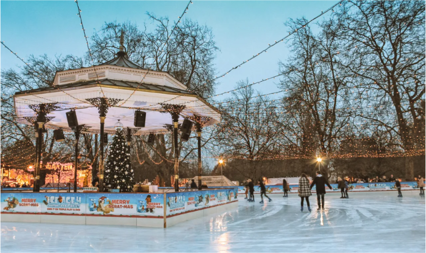

TOP 10 BEST CHRISTMAS VILLAGES IN THE WORLD

Another Christmas season is on its way, and the world is getting ready to glow with beautiful lights, festive markets, snowy streets, and unforgettable holiday moments. From charming European villages to magical winter destinations, these places make Christmas feel like a real-life fairytale.
Take a little trip with us and discover ten of the most beautiful Christmas destinations in the world. Click on any picture or destination name below to reveal its story, Christmas highlights, and travel information.
TOP 10 CHRISTMAS VILLAGES IN THE WORLD
Choose a destination and click to read more about its Christmas magic.
 1. COLMAR
Alsace, France
Click to discover Colmar
1. COLMAR
Alsace, France
Click to discover Colmar
ABOUT COLMAR
Colmar is a charming town in the Alsace region of France. Its old town is known for colorful historic buildings, narrow streets, canals, and beautiful architecture. During Christmas, decorations and lights transform the town into a festive winter destination.
CHRISTMAS HIGHLIGHTS
Visitors can explore several Christmas markets around the historic center, browse handmade ornaments and gifts, taste seasonal Alsatian treats, and enjoy the decorated streets around Little Venice and the old town squares.
WHY VISIT?
Colmar is a wonderful choice for travelers who want a traditional European Christmas atmosphere, beautiful architecture, festive shopping, and romantic evening walks.
VISIT COLMAR CHRISTMAS WEBSITE Photo: Tangopaso / Wikimedia Commons — Public domain. Photo source and license
 2. SANTA CLAUS VILLAGE
Rovaniemi, Finland
Click to discover Santa Claus Village
2. SANTA CLAUS VILLAGE
Rovaniemi, Finland
Click to discover Santa Claus Village
ABOUT SANTA CLAUS VILLAGE
Santa Claus Village is located in Rovaniemi in Finnish Lapland, close to the Arctic Circle. It is one of the best-known Christmas attractions in the world and welcomes visitors throughout the year.
CHRISTMAS HIGHLIGHTS
Guests can meet Santa Claus, visit Santa's Main Post Office, send postcards with a special Arctic Circle postmark, take photos at the Arctic Circle line, and enjoy winter activities such as reindeer experiences.
WHY VISIT?
This destination is perfect for families, children, and anyone who dreams of experiencing a snowy Christmas in the home of Santa Claus.
VISIT SANTA CLAUS VILLAGE Photo: Floppyjb / Wikimedia Commons — CC BY-SA 4.0. Photo source and license
 3. ROTHENBURG OB DER TAUBER
Bavaria, Germany
Click to discover Rothenburg
3. ROTHENBURG OB DER TAUBER
Bavaria, Germany
Click to discover Rothenburg
ABOUT ROTHENBURG
Rothenburg ob der Tauber is a historic town in Bavaria, Germany. Its preserved medieval walls, half-timbered houses, towers, and market square give it a distinctive old-world atmosphere.
CHRISTMAS HIGHLIGHTS
The Reiterlesmarkt brings festive stalls, seasonal food, handmade decorations, and Christmas gifts to the historic town center. Visitors can also explore the German Christmas Museum and traditional Christmas shops.
WHY VISIT?
It is ideal for people who want to experience a classic German Christmas market in a medieval setting.
VISIT ROTHENBURG TOURISM Photo: Mosquitivy / Wikimedia Commons — see file page for license. Photo source and license
 4. HALLSTATT
Upper Austria, Austria
Click to discover Hallstatt
4. HALLSTATT
Upper Austria, Austria
Click to discover Hallstatt
ABOUT HALLSTATT
Hallstatt is a picturesque village beside Lake Hallstatt in Austria's Salzkammergut region. It is admired for its traditional houses, mountain views, waterfront scenery, and peaceful atmosphere.
CHRISTMAS HIGHLIGHTS
During the holiday season, the historic market square is decorated for Christmas. Visitors can enjoy local crafts, seasonal food, festive lights, and the beautiful winter scenery around the lake.
WHY VISIT?
Hallstatt is a lovely destination for travelers who prefer a quiet, scenic, and romantic winter holiday surrounded by Alpine landscapes.
VISIT HALLSTATT TOURISM Photo: Thomas Fabian / Wikimedia Commons — see file page for license. Photo source and license
 5. STRASBOURG
Alsace, France
Click to discover Strasbourg
5. STRASBOURG
Alsace, France
Click to discover Strasbourg
ABOUT STRASBOURG
Strasbourg is a historic city in the Alsace region of France. Its old town, traditional architecture, and festive streets make it one of Europe's best-known Christmas destinations.
CHRISTMAS HIGHLIGHTS
The Christkindelsmärik is the city's famous Christmas market. Visitors can browse wooden stalls, enjoy Alsatian specialties, shop for ornaments, and see the large Christmas tree at Place Kléber.
WHY VISIT?
Strasbourg is a great choice for travelers who want a lively Christmas celebration with a long-standing market tradition and impressive city decorations.
VISIT STRASBOURG CHRISTMAS WEBSITE Photo: Romynine / Wikimedia Commons — see file page for license. Photo source and license
 6. GENGENBACH
Black Forest, Germany
Click to discover Gengenbach
6. GENGENBACH
Black Forest, Germany
Click to discover Gengenbach
ABOUT GENGENBACH
Gengenbach is a picturesque town in Germany's Black Forest region. Its historic streets, traditional buildings, and cozy town center create a welcoming atmosphere during the Christmas season.
CHRISTMAS HIGHLIGHTS
The town hall becomes a giant Advent calendar. Each day in December, another decorated window is revealed, creating a special seasonal attraction for visitors.
WHY VISIT?
Gengenbach is perfect for visitors who enjoy small-town Christmas traditions, historic architecture, and a warm, intimate holiday atmosphere.
VISIT GENGENBACH TOURISM Photo: peter Buck / Wikimedia Commons — Public domain. Photo source
 7. LEAVENWORTH
Washington, United States
Click to discover Leavenworth
7. LEAVENWORTH
Washington, United States
Click to discover Leavenworth
ABOUT LEAVENWORTH
Leavenworth is a mountain town in Washington State, known for its Bavarian-inspired buildings, mountain scenery, festive storefronts, and seasonal events.
CHRISTMAS HIGHLIGHTS
The Village of Lights transforms the town with more than half a million lights. Holiday activities can include live music, carolers, food vendors, visits from Santa, and seasonal events around Front Street Park.
WHY VISIT?
Leavenworth is a wonderful destination for visitors who want a bright Christmas celebration, a mountain-town setting, and a festive Bavarian atmosphere.
VISIT LEAVENWORTH CHRISTMASTOWN Photo: Steven Pavlov / Wikimedia Commons — CC BY-SA 3.0. Photo source and license
 8. QUEBEC CITY
Quebec, Canada
Click to discover Quebec City
8. QUEBEC CITY
Quebec, Canada
Click to discover Quebec City
ABOUT QUEBEC CITY
Quebec City is known for its historic Old Town, stone buildings, charming lanes, and winter atmosphere. Its European-inspired character makes it especially attractive during Christmas.
CHRISTMAS HIGHLIGHTS
The German Christmas Market features decorated wooden stalls, seasonal food, handmade gifts, music, and festive activities. Visitors can also explore Petit-Champlain and the old town's decorated streets.
WHY VISIT?
It is a great option for travelers who want a European-style Christmas market experience in North America, with the added charm of a snowy historic city.
VISIT QUEBEC CITY TOURISM Photo: Wilfredor / Wikimedia Commons — CC0. Photo source
 9. VALKENBURG
Limburg, Netherlands
Click to discover Valkenburg
9. VALKENBURG
Limburg, Netherlands
Click to discover Valkenburg
ABOUT VALKENBURG
Valkenburg is a town in the Limburg region of the Netherlands. It is especially popular during the Christmas season because of its unusual underground holiday attractions.
CHRISTMAS HIGHLIGHTS
The Gemeentegrot and Fluweelengrot caves host Christmas markets with decorated stalls, lights, ornaments, and seasonal products. The town also features festive streets and holiday events.
WHY VISIT?
Valkenburg is ideal for visitors looking for a different kind of Christmas market experience, combining history, cave scenery, shopping, and holiday decorations.
VISIT CHRISTMAS TOWN VALKENBURG Photo: Pitlane02 / Wikimedia Commons — see file page for license. Photo source and license
 10. MOUSEHOLE
Cornwall, England
Click to discover Mousehole
10. MOUSEHOLE
Cornwall, England
Click to discover Mousehole
ABOUT MOUSEHOLE
Mousehole is a traditional fishing village in Cornwall, England. It is known for its picturesque harbor, narrow lanes, coastal views, and close-knit community.
CHRISTMAS HIGHLIGHTS
The Mousehole Harbour Christmas Lights display illuminates the harbor with colorful festive designs. The reflections on the water create a memorable scene for visitors and local residents.
WHY VISIT?
Mousehole is a lovely choice for travelers who prefer a small coastal village and a special community Christmas tradition instead of a large city market.
VISIT MOUSEHOLE CHRISTMAS LIGHTS Photo: Bob Jones / Wikimedia Commons — CC BY-SA 2.0. Photo source and licenseTravel reminder: Christmas markets and light displays usually operate during a limited seasonal period. Dates, opening hours, and activities can change each year, so always check the official destination website before making travel plans.